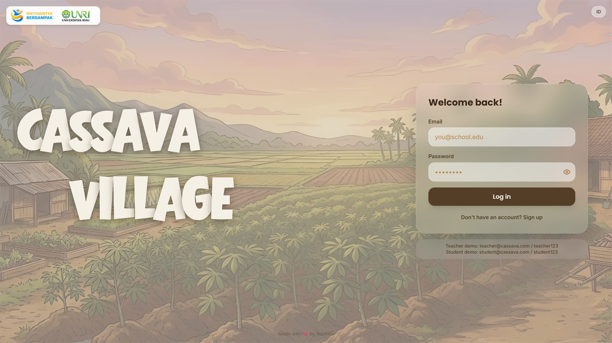

Cassava Village
Website LKPD interaktif bertema Desa Singkong untuk materi komposisi fungsi (Fase F). Dilengkapi alur cerita, eksplorasi, kuis interaktif, dan penyimpanan jawaban siswa agar dapat dipantau guru.
React 19ViteTailwindExpressPostgreSQL